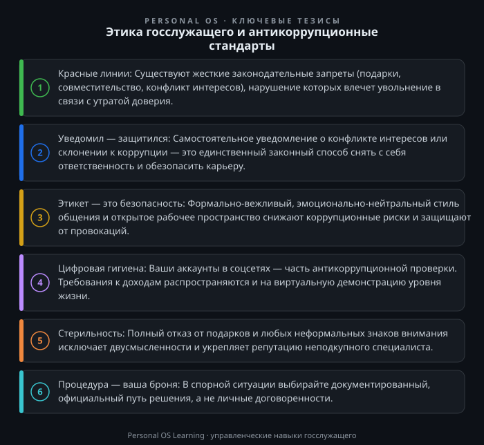

Введение
Каждому из нас знакомо ощущение, когда «бумажная» инструкция вступает в противоречие с живой реальностью. Особенно остро это чувствуется на государственной службе, где ежедневно приходится принимать решения, влияющие на жизнь тысяч людей. Тема этики и антикоррупционных стандартов часто воспринимается как набор абстрактных запретов, созданных для галочки. Однако на практике это — система профессиональной безопасности и фундамент доверия к власти.
Для госслужащего РФ это не просто свод правил, а правовой режим, нарушение которого влечет увольнение в связи с утратой доверия и запрет на дальнейшую карьеру в госсекторе. Важно понять: антикоррупционные стандарты — это не попытка ограничить вашу свободу, а механизм, который защищает вас от манипуляций, ошибок и неправомерных обвинений. В этой статье мы разберем, как применять эти стандарты в повседневной работе, где проходят границы допустимого и как выстроить личную систему защиты.
Антикоррупционные стандарты — это совокупность установленных законодательством запретов, ограничений и обязанностей, направленных на предотвращение злоупотреблений. Для государственной гражданской службы РФ базовым документом является Федеральный закон «О государственной гражданской службе Российской Федерации», а рамочным — Федеральный закон «О противодействии коррупции». Однако не стоит путать их с моральным кодексом. Законодательство устанавливает четкие «красные линии», переступать которые — значит осознанно рисковать своей репутацией и должностью.
Ключевое отличие госслужбы от коммерческой деятельности — наличие обязанности уведомлять о конфликте интересов, а не просто избегать его. Если менеджер в бизнесе может промолчать о выгодном для себя контракте, то чиновник обязан заявить об этом, даже если сделка абсолютно законна. Это жесткое правило, но оно создает предсказуемую среду.
Основные элементы стандартов включают:
Эти нормы создают каркас поведения. Но как быть с «серыми» зонами, которые не описаны в законе? Здесь и начинается сфера служебной этики.
Самое сложное в антикоррупционной работе — увидеть конфликт интересов в тот момент, когда он только зарождается, а не тогда, когда прокуратура уже вынесла представление. Юридическое определение: ситуация, при которой личная заинтересованность (прямая или косвенная) влияет или может повлиять на надлежащее исполнение должностных обязанностей. Простыми словами: личное «хочу» вступает в противоречие с профессиональным «надо».
Разберем пример. Вы — сотрудник отдела закупок. Ваш дальний родственник владеет фирмой, которая собирается участвовать в тендере, объявленном вашим ведомством. Формально вы можете не влиять на исход конкурса. Однако этого уже достаточно, чтобы заявить о конфликте интересов. Любое действие с вашей стороны, даже просто консультация коллеги о ходе торгов, будет рассматриваться как попытка лоббирования.
Почему выгодно заявить самостоятельно? В правоохранительной практике действует правило: если госслужащий сам сообщил о конфликте и не предпринял действий по его реализации, он освобождается от ответственности. Если факт сокрытия обнаружится позже — это прямой путь к увольнению «по утрате доверия».
Инструмент решения:
Помните: уведомление — это не признание вины, а документ, подтверждающий вашу добросовестность и высокий уровень правосознания.
Мы часто недооцениваем связь между культурой общения и коррупционными рисками. Между тем, соблюдение элементарных норм этикета служит мощным фильтром.
Как вы общаетесь с заявителем? Если вы позволяете панибратство, переход на «ты» или, наоборот, демонстрируете пренебрежительное отношение, — вы создаете почву для «договорняков». Психологически человеку легче предложить взятку тому, кто ведет себя неформально, или тому, кто выглядит «небожителем», которого нужно задобрить.
Практические правила делового этикета госслужащего:
Соблюдение этих норм создает репутацию безупречного профессионала, который в принципе не способен на неформальные сделки. Это ваша лучшая защита.
В жизни каждого госслужащего может возникнуть ситуация, когда заинтересованное лицо пытается склонить его к нарушению. Это может быть прямое предложение денег, просьба «ускорить процесс за вознаграждение» или косвенная угроза. Закон на вашей стороне, но только если вы действуете правильно.
Обязанность уведомлять о всех случаях обращения с целью склонения к коррупции закреплена законодательно: Федеральный закон «О противодействии коррупции» прямо обязывает государственного служащего уведомлять представителя нанимателя, органы прокуратуры или иные государственные органы о каждом таком факте. Если вы промолчали о попытке подкупа и «отделались» отказом, но не подали уведомление — это уже дисциплинарный проступок.
Ваш алгоритм действий (антикоррупционная самозащита):
Этот алгоритм переводит вас из позиции обвиняемого (если что-то пойдет не так) в позицию активного борца с коррупцией. Вы становитесь не жертвой, а добросовестным сотрудником.
В 2024 году госслужащий становится публичной фигурой, даже если он не дает телеинтервью. Ваши страницы в социальных сетях, публикации, комментарии — все это мониторится. Антикоррупционные стандарты распространяются и на виртуальное пространство.
Что нельзя делать:
Что нужно делать:
Цифровой след — это ваш паспорт. Один необдуманный репост может перечеркнуть годы безупречной службы.
Для закрепления материала выполните три упражнения. Они займут не более 20-30 минут, но помогут перевести теорию в практическую плоскость.
Задание 1. Аудит рабочего места.
Возьмите лист бумаги и опишите ваше рабочее место (кабинет, приемная, стол).
Задание 2. Ревизия окружения.
Вспомните ваш последний рабочий день. Проанализируйте, были ли ситуации, которые теоретически можно трактовать как конфликт интересов? Например, вы помогали с оформлением документов знакомому вашему родственнику? Вы обсуждали с приятелем ход тендера?
Задание 3. Чек-лист для разговора.
Подумайте о категории граждан, с которыми вы общаетесь чаще всего (предприниматели, пенсионеры, строители).
Запишите эти фразы на стикер и положите рядом с рабочим местом.
Этика госслужащего и антикоррупционные стандарты — это не только ограничения, но и механизм защиты вашей карьеры от внешних и внутренних угроз. В ситуации неопределенности всегда выбирайте формальную процедуру: уведомление лучше, чем молчание, официальное письмо лучше, чем устная договоренность. Дисциплина и публичность — ваши главные союзники. Соблюдение этих норм — признак профессионализма высокого уровня, а не бюрократическая обуза. Строя свою работу на принципах прозрачности, вы формируете личный бренд надежного специалиста, которому доверяют самые сложные задачи.

Открыть инфографику в полном размере ↗
Отправить отметку в базу Пройти тест по теме